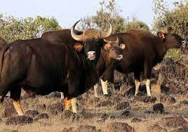
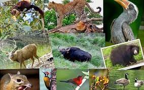
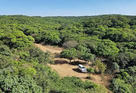

  Radhanagari Wildlife Sanctuary is a wildlife sanctuary and natural World Heritage Site of category ix and x since 2012, located in Kolhapur district, Maharashtra State, India. It lies at the southern end of the Sahyadri hills in the Western Ghats. It is notable as the first declared wildlife sanctuary in Maharashtra, notified in 1958, as "Dajipur Wildlife Sanctuary" and is popularly known as the "Bison Sanctuary".